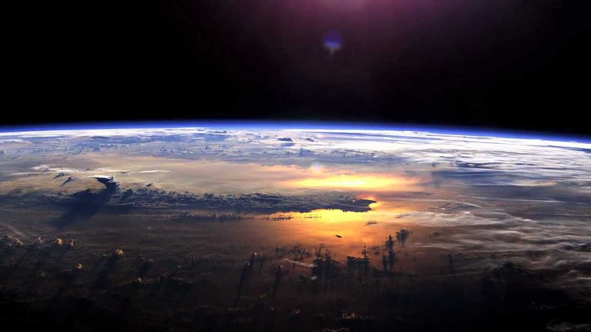
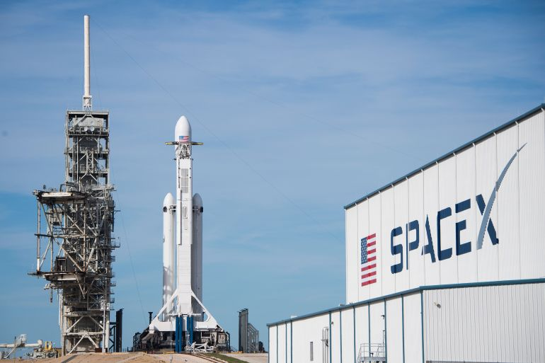
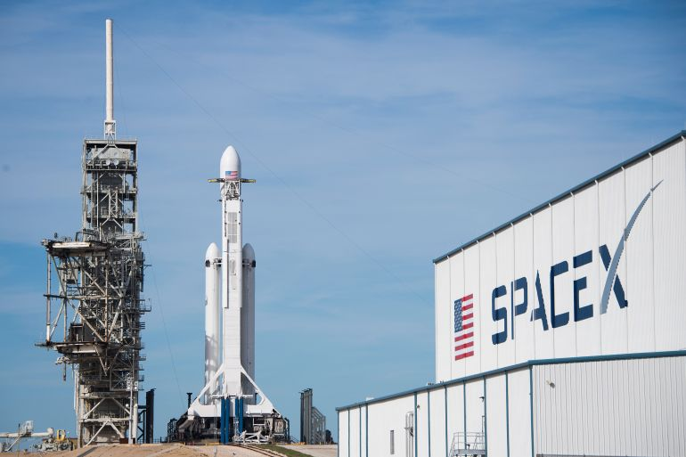

at Your Fingertips
The unpiloted Japanese cargo spacecraft was installed this morning at 10:46 a.m. EDT to the Earth-facing port of the International Space Station’s Harmony module, where it will remain for two months.
Learn MoreNASA ignited another set of space fire experiments last week when Saffire IV lit a number of longer, stronger flames inside Northrop Grumman’s Cygnus cargo spacecraft. Saffire, NASA’s Spacecraft Fire Safety Demonstration Project.
Learn MoreStephen William Hawking (1942 - 2018) was the former Lucasian Professor of Mathematics at the University of Cambridge
Devamını okuImagination is more important then knowledge.Knowledge is limited.Imagination encircles the world.
Devamını okuA blindingly bright star bursts into view in a corner of the night sky — it wasn't there just a few hours ago, but now it burns like a beacon.That bright star isn't actually a star, at least not anymore.The brilliant point of light is the explosion of a star that has .
Devamını okuDon't let the name fool you: a black hole is anything but empty space. Rather, it is a great amount of matter packed into a very small area - think of a star ten times more massive than the Sun squeezed into a sphere approximately the diameter of New York.
Devamını okuNASA stands for National Aeronautics and Space Administration. NASA was started on October 1, 1958, as a part of the United States government. NASA is in charge of U.S. science and technology that has to do with airplanes or space.
 

SpaceX, the rocket company founded by tech billionaire Elon Musk, was created with the mission of taking humans to Mars. Nearly two decades on, it's getting ever closer to achieving that goal while accomplishing plenty of other milestones along the way.
The Japan Aerospace Exploration Agency (JAXA) was formed in 2003 after the merger of three government space organizations into one. JAXA is responsible for all civilian space activities in Japan, with activities ranging from basic space research to ongoing space missions.
Elon Musk, (born June 28, 1971, Pretoria, South Africa), South African-born American entrepreneur who cofounded the electronic-payment firm PayPal and formed SpaceX, maker of launch vehicles and spacecraft.
Learn MoreGood things come to those who wait, and Alan Stern waited a long time for a Pluto flyby. Stern started advocating for a mission to what was once considered the ninth planet in the late 1980s. In 2001, after several false starts with other mission concepts.
Learn MoreAnyone who’s done significant time in the space industry could be forgiven for reflexively dismissing the recently proposed mega-constellations, consisting of hundreds and even thousands of low-orbiting satellites, as pie in the sky.
Learn More